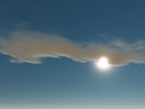
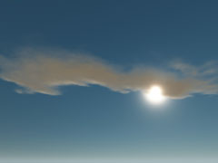
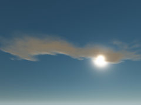
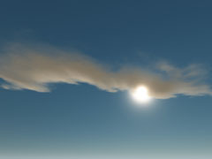
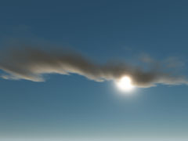
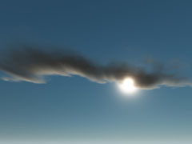
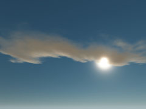
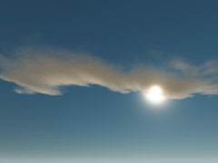

Параметры шейдера
Облака расстояний предоставляют следующие параметры шейдера через Параметры шейдера в редакторе материалов, чтобы настроить их внешний вид.
Параметр | Описание |
|---|---|
Альфа-насыщенность | Управляет альфа-насыщенностью облаков при их смешивании с небом. При высоких значениях менее непрозрачные части текстуры облака будут сильнее исчезать. |
Затухание | Управляет тем, насколько сильно солнечный свет ослабляется при движении через отдаленное облако. Ослабление света рассчитывается для каждого пикселя. |
Множитель цвета неба | Значение, умноженное на цвет неба, определенный для текущего времени суток. Результат будет использоваться в пиксельном шейдере для смешивания цвета солнца и неба с использованием вычисленного значения ослабления света. |
Размер шага | Управляет скоростью прохождения текстуры облака (плотностью) для вычисления попиксельного затухания света. |
Множитель цвета солнца | Значение, умноженное на цвет солнца, определенный для currentbytimeofday. Результат будет использоваться в пиксельном шейдере для смешивания цвета солнца и неба с использованием вычисленного значения ослабления света. |
Простые далекие облака
Simple Distance Clouds позволяет использовать облака на расстоянии без вычислений объемного затенения.
Параметры шейдера | Описание |
|---|---|
Экспозиция | Величина экспозиции для включения HDR на текстуре облака LDR. |
Непрозрачность | Модификатор непрозрачности облака. |
Удаленные облака
Advanced Distance Clouds позволяет использовать облака на расстоянии с более точными вычислениями затенения.
Параметры шейдера | Описание |
|---|---|
Альфа-множитель | Альфа-множитель для текстуры облаков. |
Альфа-насыщенность | Альфа-насыщенность текстуры облаков. |
Высота облаков | Высота облачного слоя. |
Плотность неба | Плотность облаков, используемая для рассеяния света неба. |
Плотность Солнца | Плотность облаков, используемая для рассеяния солнечного света. |
Параметры генерации шейдера
В параметрах генерации шейдера доступны следующие параметры:
| Параметр | Описание |
|---|---|
| Простые облака на расстоянии | Позволяет использовать облака на расстоянии без вычислений объемного затенения. |
| Облака расширенного расстояния | Позволяет использовать облака на расстоянии с более точными вычислениями затенения. |
Примеры
 |  |  |
Альфа-насыщенность 1,5 | Альфа-насыщенность 2 | Альфа-насыщенность 4 |
|---|
 |  |  |
Затухание 0,2 | Затухание 0,4 | Затухание 0,6 |
|---|
 |  | |
StepSize 0,005 | StepSize 0,0075 | StepSize 0,01 |
|---|